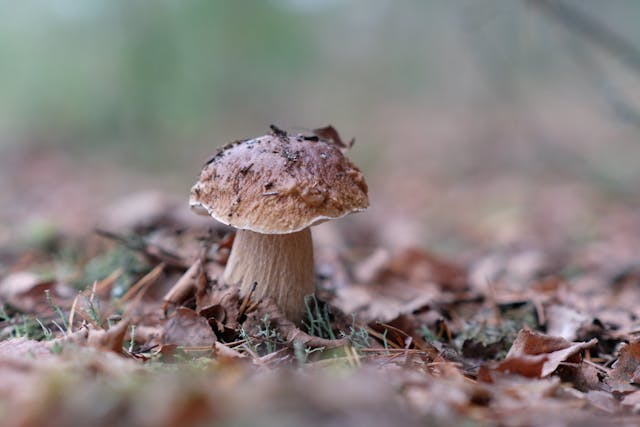
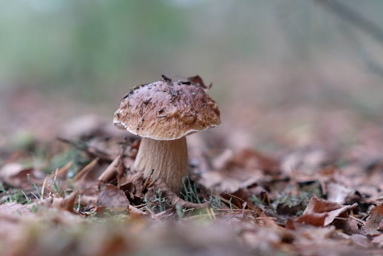

Proteger, restaurar y promover el uso sostenible de los ecosistemas terrestre
Los ecosistemas terrestres son vitales para el sostenimiento de la vida humana, contribuyen a más de la mitad del PIB mundial e incluyen diversos valores culturales, espirituales y económicos3. Los bosques cubren casi el 31% de la superficie de nuestro planeta y albergan más del 80% de todas las especies terrestres de animales, plantas e insectos4. Aproximadamente 1.600 millones de personas dependen de los bosques para su subsistencia, incluidos 70 millones de personas indígenas4. Las estrategias para la conservación de los ecosistemas terrestres pretenden proteger zonas naturales importantes por su biodiversidad y/o los servicios ambientales que brindan a la sociedad1. Dentro de esta estrategia, los instrumentos más importantes impulsados han sido las áreas naturales protegidas federales (ANP), los humedales de la Convención Ramsar y los programas de pago por servicios ambientales (PSA)1. Algunas acciones que podemos implementar son: Comer alimentos producidos a nivel local y de manera sostenible4. Reciclar y consumir solo lo que necesitamos de manera responsable4. Limitar el uso de energía mediante sistemas eficientes de calefacción y refrigeración4. Ser respetuosos con la fauna y flora silvestres y participar solamente en actividades de ecoturismo que se organicen con ética y responsabilidad para no perturbar la vida silvestre4. Sin embargo, entre 2000 y 2020, la proporción de bosques disminuyó de un 31,9% a un 31,2% de la superficie terrestre total35. Además, entre 2015 y 2019, más de 100 millones de hectáreas de tierras sanas y productivas se degradaron anualmente, lo que afectó a la vida de 1.300 millones de personas3.